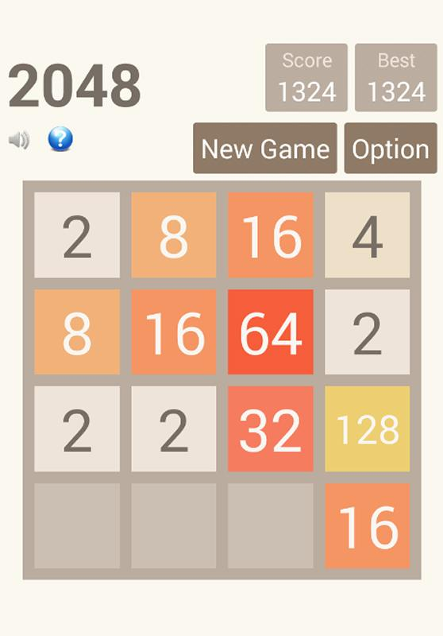

A self motivated learner with 8 years of IT experience.Looking forward to use my inherent curiosity and creative skills to explore new options under the UI space in web/mobile apps.
My current projects
Basic game app
- Learnt to understand a given application's code from opensource Github.
- Fork an existing page and clone it to our local git hub repositor>
- Edit the functionality as per the updated requirement
- Pushed the code to the github repository for version control and public sharing
First own functional webpage

- Learnt the basics of creating a html page with proper semantics
- Create and link a functional style page for the html using CSS concepts and make the display centralised
- Implemented positioning of elements, image and page linking across multiple htmls
- Pushed the code to the github repository for version control and public sharing
Webpage from a Figma design
- Created a functional website replicating a given Figma UI design
- Learnt to analyse the Figma user interface components and use the style settings for the current project
- Pushed the code to the github repository for version control and public sharing
JavaScript projects
- Learnt the basics of Java script and using them on a simple html by linking it
- Learnt the concepts of a systematic thought process for programming
- Used the step by step method of understanding the problem statement along with the assumptions, writing a pseudocode, framing an algorithm for a given problem statement
- Used scratch tool to visualise the steps for the solution output
- Implemented the solution in a webpage using the Javascript logic linked to the basic html page.
- Pushed the code to the github repository for version control and public sharing
Web Robot - Basic & Advanced

- Learnt the concept of developing an interactive webpage that works based on the inputs recieved from the user dynamically
- Developed a basic web page to show the traditional way of interaction using the alert and prompt features from Javascript page.
- Developed another webpage where-in the interaction with the user happens using the DOM manipulation concepts of Javascript
- Implemented the solution in a webpage using the Javascript logic linked to the basic html page.
- Pushed the codes to the github repository for version control and public sharing